SCO 노아의 방주 프로젝트
IN PROGRESS · 2026.07 기획안
SCO 노아의 방주 프로젝트는 길이 약 300m의 방주 본체 실내 3개 층과 루프탑을 하나의 서사로 잇는 대규모 문화·체험 공간 기획입니다. 창조에서 대홍수, 홍해를 지나 십자가와 부활까지, 15개 경험 구간이 물이라는 하나의 주제로 이어집니다.
- 상태
- 진행 중
- 기획안
- 2026.07
- 대상지
- 칭다오 · 중국
- 규모
- 300m × 50m × 30m
기획안 개요
SCO 노아의 방주 프로젝트는 길이 약 300m의 방주 본체 실내 3개 층과 루프탑을 하나의 서사로 잇는 대규모 문화·체험 공간 기획입니다. 창조에서 대홍수, 홍해를 지나 십자가와 부활까지, 15개 경험 구간이 물이라는 하나의 주제로 이어집니다.
리본소프트는 이 기획안의 콘텐츠와 디지털 시스템, 인터랙션 기술이 실제 공간 환경과 어떻게 연결되는지를 검토하고 있으며, 프로젝트와 관련한 현장 시찰과 실무 협의를 진행하고 있습니다.
- 창조
- 대홍수
- 홍해
- 십자가와 부활
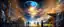
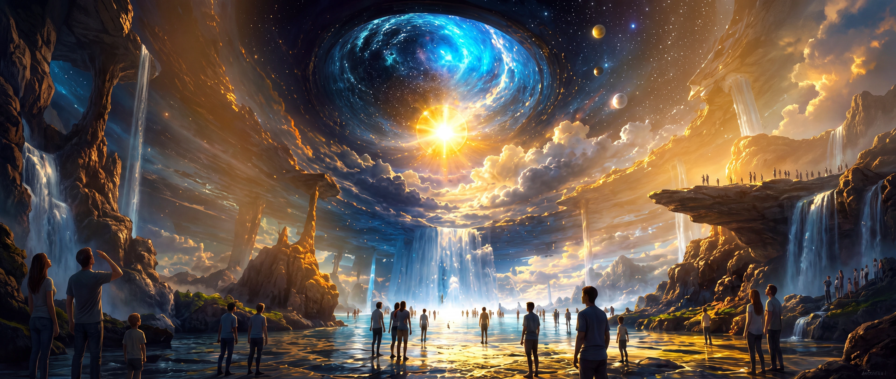
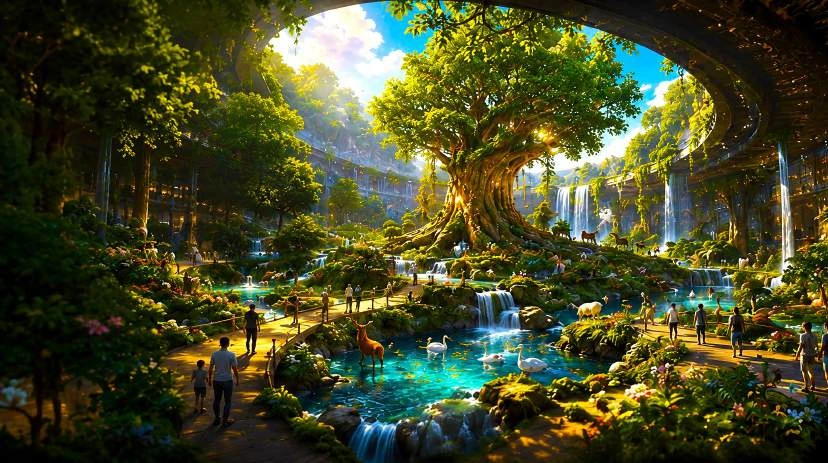
이 페이지의 모든 이미지와 수치는 2026년 7월 기획안 기준의 콘셉트 자료입니다. 시공 결과물이 아닙니다.
물에 의한 심판이, 이번에는 물이 갈라져 구원을 이룬다.
기획안 · Z12 출애굽과 홍해
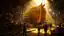
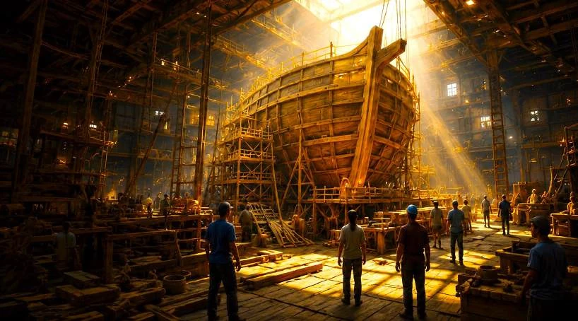
창조의 물
창조와 에덴, 인간의 타락, 노아의 부르심을 거쳐 관람객이 방주의 승선객으로 전환되는 층입니다.
가장 개방적으로 느껴지는 진입 공간에서 빛과 물이 나뉘며 세계가 만들어지는 순간을 올려다보게 하고, 에덴의 네 갈래 물길로 물이 생명을 만드는 상태를 보여줍니다. 이어 색과 생명감이 빠져나가는 공간 변화로 심판을 예고하고, 거대한 목재 구조가 조립되는 방주 건조 현장에서 1층을 닫습니다.
| 구간 | 4 |
|---|---|
| 면적 | 약 9,000㎡ |
| 체류 | 약 40분 |
창조 · 에덴 · 타락 · 방주 건조
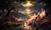
심판의 물
심판의 물로 세상이 덮이는 대홍수의 역사와, 보호와 언약의 약속을 경험하는 핵심 층입니다.
동물들과 나란히 방주로 들어가는 행렬 구조가 상하층으로 열리며 압도적인 스케일을 만들고, 거대한 문이 닫히는 순간 빛과 소리가 대비를 이룹니다. 대홍수는 2층에서 가장 큰 단일 면적과 예산이 배정된 구간이며, 이후 낮고 어둑한 표류 구간에서 관람의 밀도를 낮춘 뒤 무지개와 언약으로 층을 마무리합니다.
| 구간 | 5 |
|---|---|
| 면적 | 약 9,000㎡ |
| 체류 | 약 60분 |
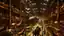
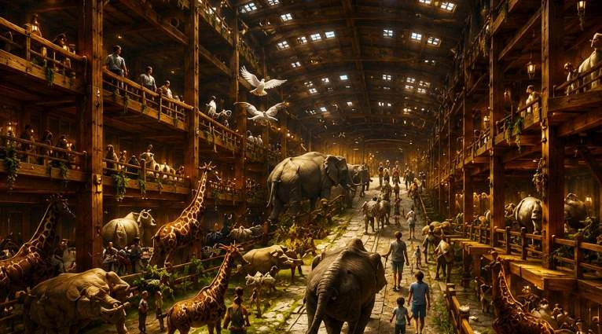
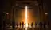
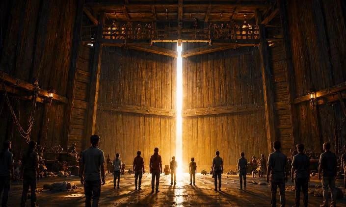
동물의 승선 · 대홍수 · 비둘기와 언약
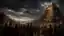
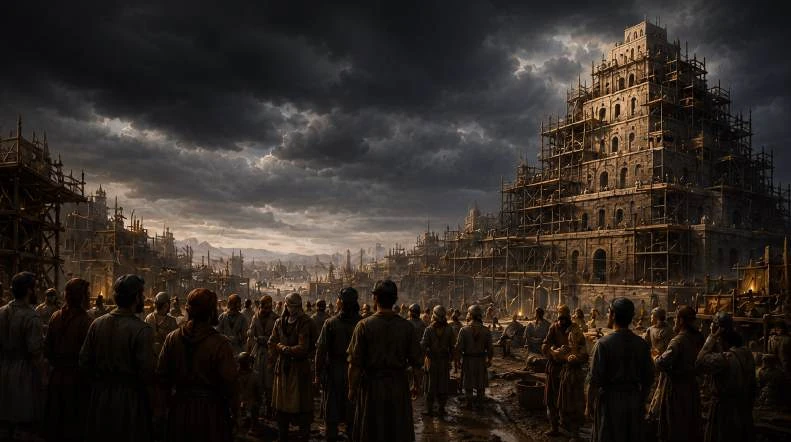
구원의 물
구약의 약속과 선지자의 외침, 홍해의 기적을 거쳐 신약의 십자가와 부활로 이어지는 구원의 서사를 완성합니다.
홍해는 대홍수와 정면으로 대칭을 이루는 구간입니다. 물에 의한 심판이 이번에는 물이 갈라져 구원을 이루고, 이 대비가 십자가와 부활로 이어집니다. 좌우로 벽처럼 선 물과 그 사이의 마른 길을 관람객이 통과하며, 마지막 구간은 어둠에서 빛으로의 전환으로 전체 서사를 닫습니다.
| 구간 | 5 |
|---|---|
| 면적 | 약 9,000㎡ |
| 체류 | 약 60분 |
홍해 · 광야와 예언 · 십자가와 부활
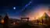
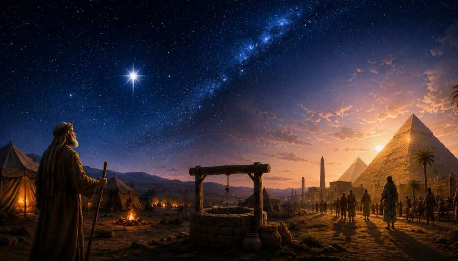
언약의 갑판
실내에서 완성된 구원의 서사를 실제 하늘과 바다를 배경으로 되새기는 에필로그 구간입니다.
언약의 하늘과 생명수의 정원, 칭다오 전망과 전망 카페, 미디어 기반 무지개 연출과 야간 피날레로 구성되며, 2층에서 제시된 무지개의 언약이 3층의 십자가와 부활을 지나 실제 하늘 아래에서 다시 읽히도록 배치됩니다.
| 구간 | 1 |
|---|---|
| 면적 | 약 9,000㎡ |
| 체류 | 약 20분 |
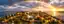
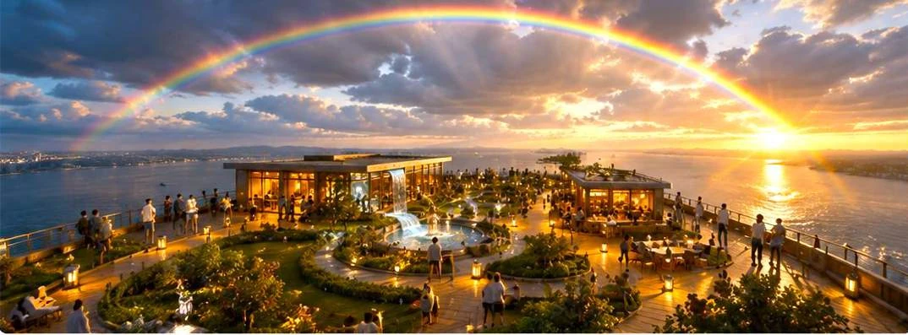
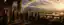
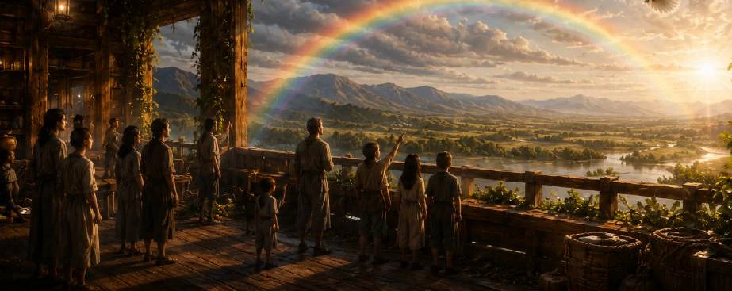
무지개 언약 · 새로운 시작 · 소망
대홍수
물이 세상을 덮고 방주가 떠오르는 순간을 관람객이 신체적으로 경험하는 구간입니다. 2층 최대 단일 공간과 최대 예산이 배정되며, 우선 개발안은 수위 상승에 동기화되어 관람석이 함께 상승하는 방식, 대체 개발안은 대형 워터 스크린과 기계무대에 다면 프로젝션을 결합한 고정형 극장입니다.
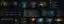
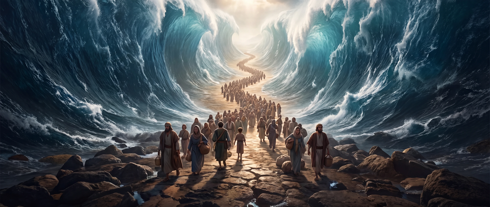
출애굽과 홍해
대홍수와 정면으로 대칭을 이루는 구간입니다. 좌우로 벽처럼 선 약 25m의 물과 그 사이 마른 길을 관람객이 직접 통과하며, 파도와 물보라, 안개와 진동, 빛과 바람 효과가 함께 구성됩니다.
3,000~4,000㎡15~20분
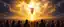
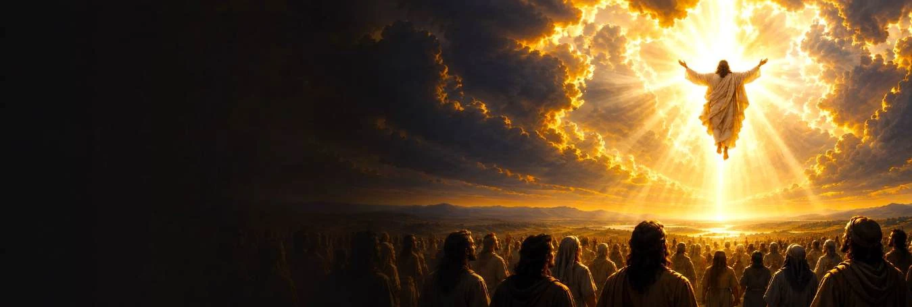
십자가와 부활, 그리고 승천
예루살렘 입성과 최후의 만찬, 겟세마네와 체포, 십자가의 죽음과 부활, 그리고 승천으로 이어지는 연속 피날레 구간입니다. 상승하는 빛과 구름, 열리는 하늘을 360도 몰입형 LED와 입체 음향으로 구성하고, 승천 직후의 침묵과 빛으로 여운을 남깁니다.
약 2,500㎡급18~25분
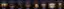
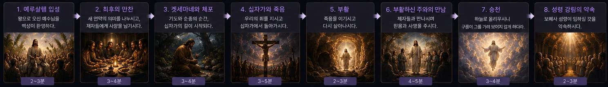
| # | 구간 | 유형 | 면적 | 체류 |
|---|---|---|---|---|
| Z1 | 태초 | 몰입형 전시 | 약 2,000㎡급 | 8~12분 |
| Z2 | 에덴의 네 강 | 몰입형 전시 | 약 2,500㎡급 | 8~12분 |
| Z3 | 잃어버린 낙원 | 몰입형 전시 | 약 2,000㎡급 | 8~12분 |
| Z4 | 부르심과 건조 | 상호작용 체험형 | 약 2,500㎡급 | 8~12분 |
| Z5 | 동물의 행진 | 상호작용 체험형 | 약 2,000㎡급 | 12~14분 |
| Z6 | 문이 닫히다 | 몰입형 전이 | 약 1,000㎡급 | 6~10분 |
| Z7 | 대홍수 | 핵심 연출 구간 | 3,000~4,000㎡ | 15~20분 |
| Z8 | 방주 안의 기다림 | 몰입형 전시 | 약 1,500㎡급 | — |
| Z9 | 비둘기와 언약의 표징 | 복합 연출 | 1,500~2,000㎡ | 10~14분 |
| Z10 | 흩어진 사람들 | 몰입형 전시 | 약 1,500㎡급 | 8~12분 |
| Z11 | 약속의 사람들 | 몰입형 전시 | 약 1,500㎡급 | 8~12분 |
| Z12 | 출애굽과 홍해 | 핵심 연출 구간 | 3,000~4,000㎡ | 15~20분 |
| Z13 | 왕과 예언자에서 메시아까지 | 연결 서사 | 약 1,500㎡급 | 10~14분 |
| Z14 | 십자가와 부활 | 핵심 연출 구간 | 약 2,500㎡급 | 18~25분 |
| RF | 언약의 갑판 | 루프탑 통합 구간 | 약 9,000㎡ | 약 20분 |
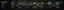
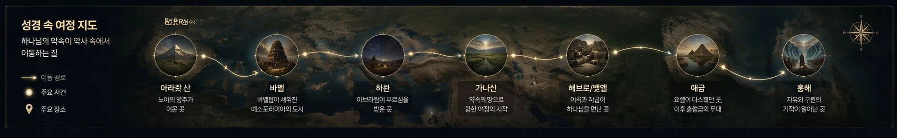


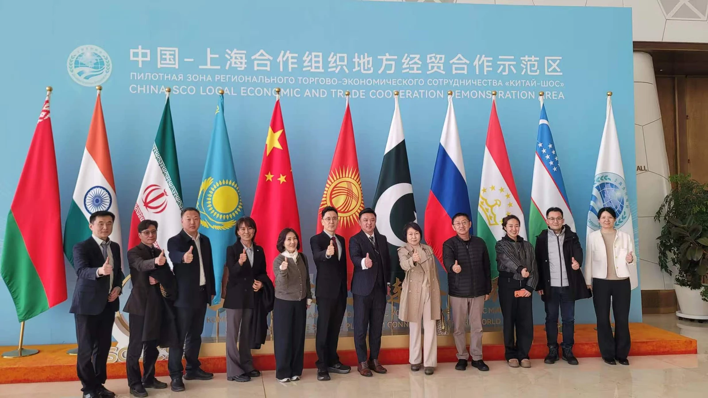
- 면적의 설정과 구역별 기획 및 연출 방향은 가안이며, 실제 방주 건조 기획과 함께 보다 세밀한 기획이 필요합니다.
- 관람 구역의 면적은 기획 단계의 임시 계획값이며, 실제 면적은 선체 구조와 설비, 피난 동선, 휴게시설 등 공용공간 계획에 따라 조정될 수 있습니다.
- 실제 수용인원과 총 재실자 수는 유효면적·소방·피난·군중 시뮬레이션을 통해 전문기관이 확정하며, 산정에서 루프탑과 기단부는 제외되어 있습니다.
- 프로젝트는 현재 진행 단계에 있으며 최종 설계, 확정 부지, 건설 승인 또는 공사 착수를 의미하지 않습니다.